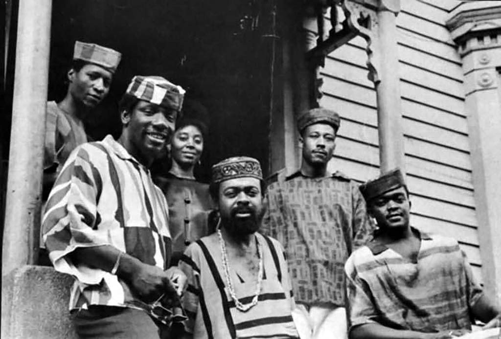
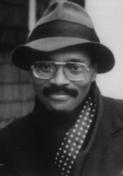
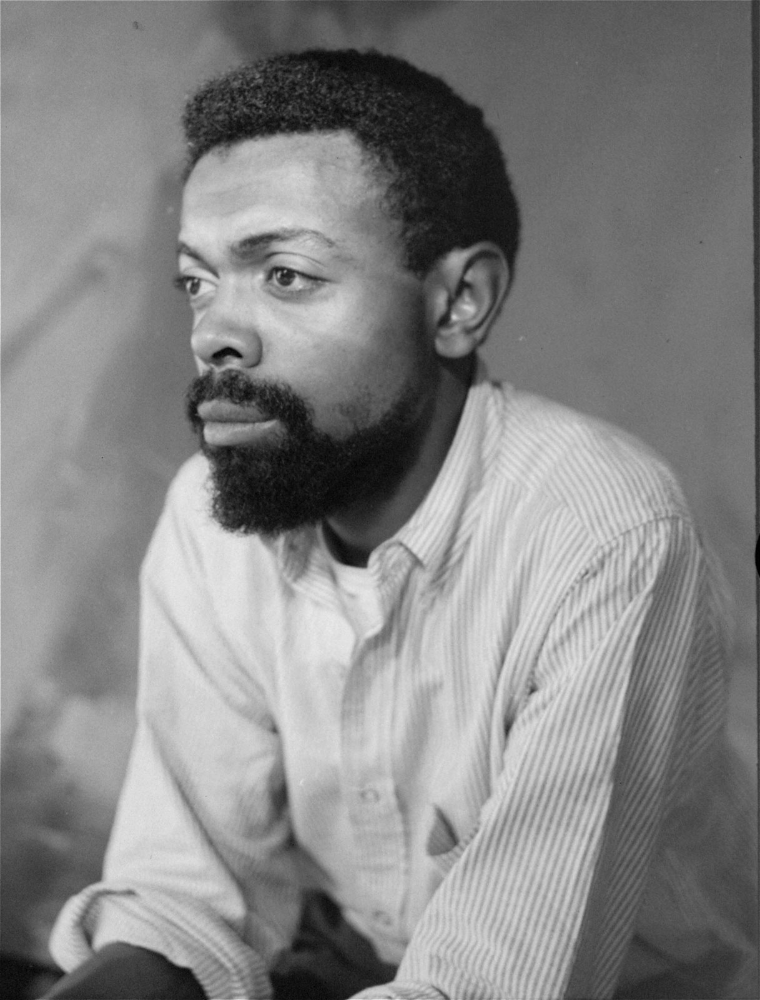
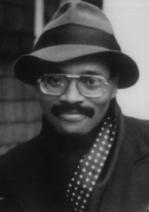
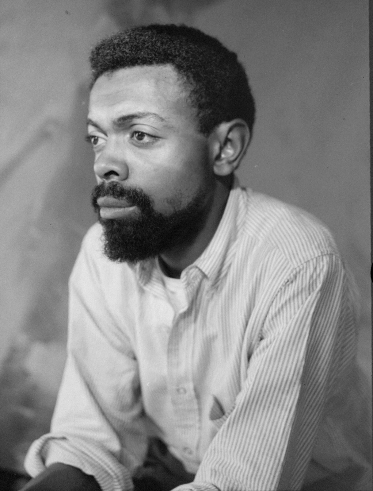

The Black Arts Movement
Background
The early 20th century gave witness to an insurgence of black art and culture due to the fundamental switch in the mindset of African Americans after the First World War. Blacks began to shed the sentiment of inferiority gifted to them by white America, in favor of entering a new era of dignity, pride and self-assurance. Blacks began migrating in droves from the rural south to the industrial north, determined to seek economic, social, and artistic opportunity and liberation. This new sentiment of determination and the denouncement of previously accepted condescending tropes, lead to the Harlem Renaissance and the New Negro Movement. The New Negro, a term coined by Alaine LeRoy Locke, was an individual who had "broken the inner grip of prejudice" and reached a "spiritual emancipation". They no longer considered themselves to be under the tyrannical thumb of white America, but were searching for the meaning of true blackness, devoid of the imposition of white America's thoughts and prejudices.
Through the new Negro movement and subsequent Harlem renaissance, African Americans began to create art intended for consumption by other African Americans. Through art, black America sought to develop a black aesthetic, which did not previously exist beyond the realm of White influence, in order to reach cultural emancipation. This movement toward a black Aesthetic has been coined the Black Arts Movement.
Previously, the black aesthetic included Uncle Tom figures, sambos, mammies and other images that demeaned the black existence in a way that made black life laughable to the white superiority complex. Black America was actively fighting against these tropes and formulating a new image of who or what the black person is and stands for unconcerned with the white gaze.


Legacy of the Black Arts Movement
The Black Arts Movement lead to the creation of black publishing houses, journals, magazines and art houses. Moreover, it lead to different genre's that were specific to black art such as revolutionary theatre, a genre coined by Amiri Baraka. Moreover, with a new appreciation of black art and culture, universities began to create African American Studies departments. Lastly, with an increase in black writing and a new platform, black stories were able to be told in a way they were not previously able to be.

Major Artists
- Rosa Guy
- Amiri Baraka (LeRoy Jones)
- Jean Carey Bond
- Maya Angelou
- Nathan Hare
- James Baldwin
- Lorraine Hansberry
- Larry Neal

 
